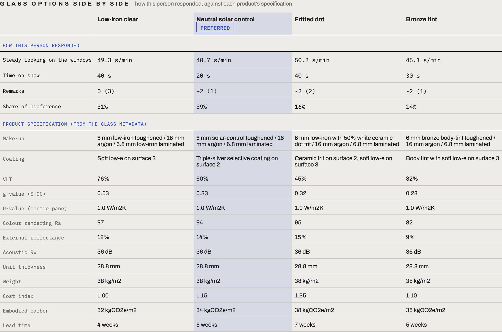

Decode walk · spec sheet

Steady looking, time on show, remarks and share of preference for each glass.
Make-up, coating, VLT, g-value, U-value, Ra, reflectance, Rw, thickness and weight.
Cost index, embodied carbon and lead time, so the trade-off sits on one sheet.
Visual Vibes · glazing study · report